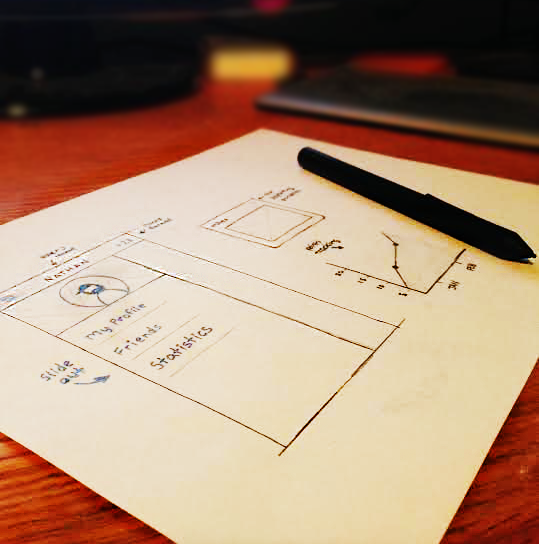

Hello World.
My name is Nathan Sokol. I'm a professional techie living in the b-e-a-utiful Austin, TX. When I'm not working, designing, or developing, I like spending time outdoors, fishing,
disc golfing or hanging out with friends at the greenbelt.
I have a passion for design and the skills to turn them into reality. I enjoy the challenges of the ever emerging technology stack and work hard to keep consistent with key design principles to stay fluid and relevant.
"Nathan developed and supported the Squad Health Check app and was the lead developer on the Cloud Engineering InfoHub. He designed and implemented the needed features based on stakeholder feedback. Nathan cross-trained others on the team to enable them to improve their development skills and deliver projects they were working on."
Jan Acosta - IBM
DevOps Transformation Manager
"I hired Nathan to work at IBM. It was easily one of my best hiring decisions. Nathan is an outstanding developer and designer. He has an outstanding work ethic and an attention to detail that immediately distinguishes him from his peers. If you need something done right and on time, you go to Nathan. On top of all of that, he's a great team player. Everybody likes Nathan and he helps bring out the best in others. If you get the chance to hire him, you should."
Jim Jones - IBM
Cloud TaaS Manager
"Nathan was assigned several tasks during his Internship at Hewlett Packard related to code refactoring, software configuration management, database migration, and build automation. Not only did he exceed expectations of what he was asked to deliver, he exemplified organizational agility and how to solve complex problems in an Enterprise Application environment. The hands-on experience acquired prior to graduating and his ability to work in a high-paced environment puts him at a level over and above his peers. For that reason, I would recommend him for any future opportunity or endeavor"
Michael Seiden - HP
Software Development Engineer
Experience.
Designer/Front End Engineer
IBM - 2015 – Present
Implemented the information architecture of an entire organization into an online centralized hub of information. Created several dashboards to show data analytics and allow communication between various teams across IBM. Designed graphics and videos using Adobe Illustrator and After Effects to visualize content and establish a brand identity. Provided a design framework that improved collaboration and kept consistency throughout the Cloud Engineering Guild. Developed a web solution using WordPress to help define DevOps Transformation within IBM. Coached junior developers in best practices in front end development.
IT Developer/Engineer I
Hewlett Packard - 2012 - 2015
Established a relationship with HPFS Business to understand business needs for a mobile application. Developed a mobile solution using HP Anywhere development tool and Enyo framework. Worked to remove code dependency and stabilize AM systems on an agile development team. Defined the strategy and performed the migration to Subversion across the entire HPFS team.
Software Developer Intern
Hewlett Packard - 2012
Refactored existing code to improve efficiency and overall security. Deployed application package to a web server and reconfigured existing infrastructure. Created a Subversion repository and migrated source code from previous VCS. Utilized Jenkins tool to automatically check out source code, build application and deploy on a daily schedule.
Integration and UI Intern
Waste Management Inc. - 2011
Assisted in the design and implementation of the WM.com website as well as Dumpster.com. Worked to resolve HTML, CSS, JavaScript and browser compliance issues. Collated documentation for processes and technical requirements.
Design.
Infohub
While working at IBM, I was in charge of creating graphics for the DevOps Transformation team within Watson and Cloud Platform. These are a few of the designs that represent this effort.
Tooltrain
One of the pillars of a DevOps Transformation is tooling. At IBM, the Tools-as-a-Service squad asked for my help in creating them a branding image. These are just a few examples of the "tooltrain".
Dasle
Another internal IBM website.
Mobile App Design
This was a fun prototyping project to explore how an idea could translate into a mobile application.
Personal
A collection of works of art.
